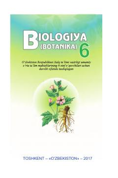

BB6-sinf o'quvchilari uchun botanika fanidan rasmiy darslik.
Ushbu darslik umumiy o'rta ta'lim maktablarining 6-sinf o'quvchilari uchun mo'ljallangan bo'lib, botanika fani asoslari, o'simliklar dunyosi, ularning tuzilishi va hayotiy jarayonlari haqida ma'lumot beradi. Kitobda o'simliklar hujayrasi, organlari, sistematikasi hamda tabiatdagi ahamiyati batafsil yoritilgan.